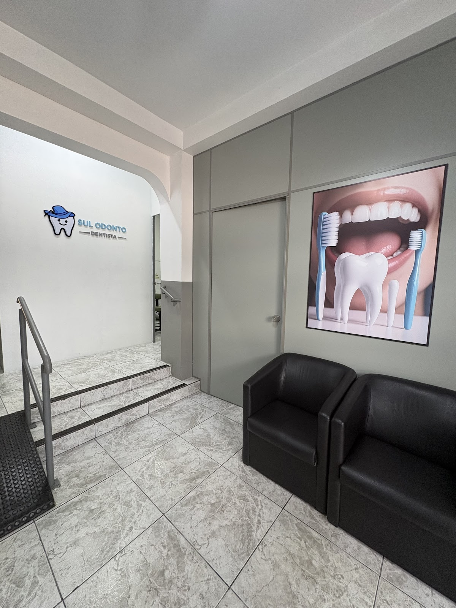
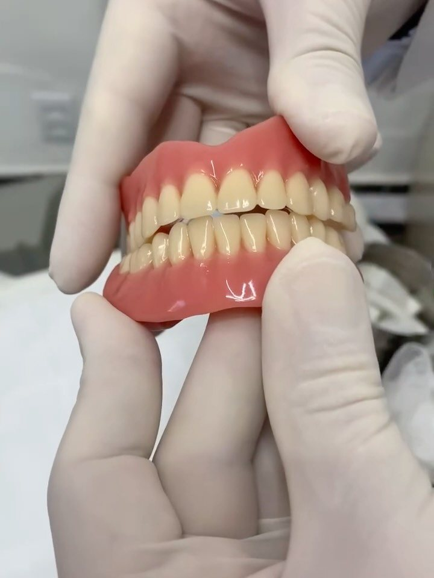
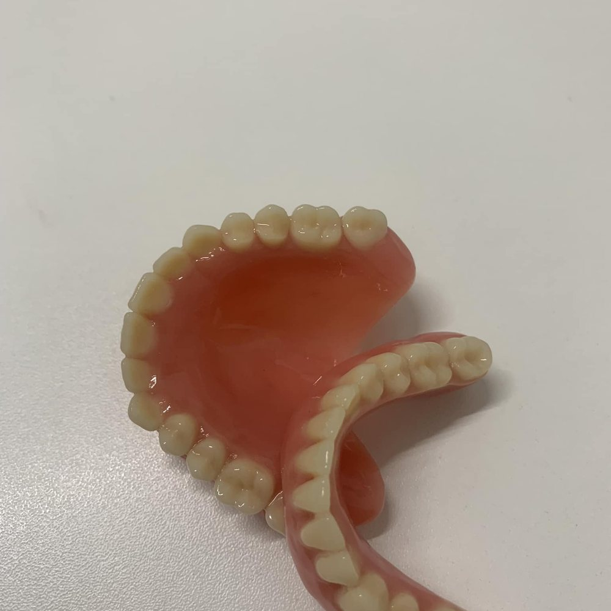
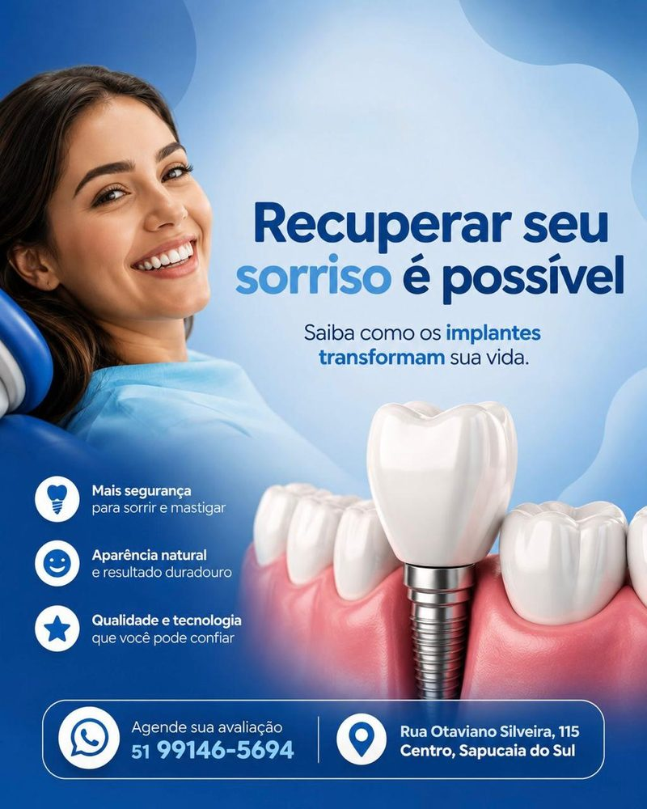
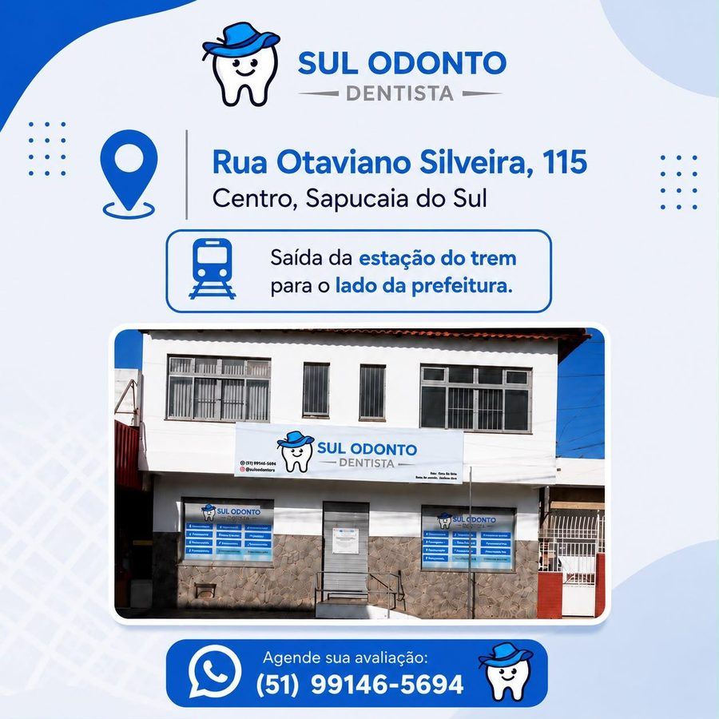

Dentista no Centro de Sapucaia, do check-up à prótese.
Há 22 anos cuidando de sorrisos em Sapucaia do Sul. Limpeza, restaurações, canal, implantes, próteses e aparelho. Agende sua avaliação direto pelo WhatsApp.
R. Otaviano Silveira, 115, Centro. Segunda a sexta das 9h às 19h, sábado das 9h às 12h.

O que você precisa?
Toque nos tratamentos e escolha o melhor horário. O cartão de agendamento vai sendo preenchido, e a mensagem chega pronta no WhatsApp da clínica.
Pode escolher mais de um
Não sabe qual é o seu caso? Tudo bem: sem escolher nada, a mensagem pede uma avaliação.
agendamento
- Tratamento
- avaliação
- Urgência
- estou com dor
- Horário
- qualquer um
- Nome
- ...
Abre o WhatsApp da clínica com a mensagem pronta. É só tocar em enviar.
Prótese feita sob medida, do molde à entrega.
A clínica faz próteses sob medida para cada paciente. Na avaliação, você conhece as opções para o seu caso e entende cada etapa.
- Prótese total (dentadura), superior e inferior, para quem perdeu todos os dentes.
- Prótese parcial removível, que repõe alguns dentes e se prende nos que ficaram.


Antes e depois de um caso da clínica
Arraste a barra para comparar: à esquerda, a paciente antes do tratamento; à direita, o sorriso com a prótese pronta.
Imagem publicada pela Sul Odonto no Google, com o logo da clínica.
Implantes
Um pino de titânio substitui a raiz do dente perdido e recebe uma coroa por cima. Na avaliação, você conhece as opções para o seu caso e entende cada etapa.
Nota 4,9 em 62 avaliações no Google
Algumas das coisas que os pacientes escreveram sobre a clínica.
Desde a recepção até os atendimentos com a dentista, foi tudo impecável. Concluí meu tratamento e logo já vou iniciar o da minha filha.
Larissa, no GoogleEstou morando em outra cidade, vou a Sapucaia somente para consulta com ele.
Avaliação no GoogleMuito bom atendimento, desde a recepção até a Dra. Débora, uma profissional excelente, super recomendo.
Altemir, no GoogleÓtimo, sempre muito atenciosos e cuidadosos, ótimos profissionais.
Avaliação no GoogleExcelente, profissional, competente e atenciosa, clínica top.
Rodolfo, no GoogleEstou muito satisfeita com o trabalho realizado com o atendimento, cumprimento das datas e qualidade da prótese que adquiri.
Zilma, no Google
Perguntas frequentes
O básico para marcar sua consulta sem complicação.
Não achou sua dúvida? Pergunte direto para a clínica.
Perguntar no WhatsAppComo marco uma consulta?
Pelo WhatsApp da clínica, (51) 99146-5694. Se quiser, use o cartão de agendamento aqui do site: você escolhe o tratamento e o horário, e a mensagem chega pronta.
Não sei qual tratamento preciso. E agora?
Sem problema. É só pedir uma avaliação. Na consulta, você conhece as opções para o seu caso e entende cada etapa.
Quais tratamentos a clínica faz?
Limpeza, clareamento, restaurações, tratamento de canal, extração de siso, implantes, próteses, facetas em resina, ortodontia (aparelho) e periodontia (gengiva).
Estou com dor. Como aviso que é urgente?
No cartão de agendamento, ligue a opção “Estou com dor, é urgente”. A mensagem chega no WhatsApp da clínica já avisando que é urgência.
Qual é o horário de atendimento?
De segunda a sexta, das 9h às 19h. Aos sábados, das 9h às 12h. Domingo a clínica fica fechada.
Como chego de trem?
Na saída da estação do trem, siga para o lado da prefeitura. A clínica fica na R. Otaviano Silveira, 115, no Centro.
A entrada é acessível?
Sim. A entrada da clínica é acessível para cadeira de rodas.
Chegando na Sul Odonto
Role a página e veja o caminho, da calçada até o consultório.
- R. Otaviano Silveira, 115No Centro de Sapucaia, pertinho da estação do trem.
- A placa na calçadaA placa azul da Sul Odonto aponta a entrada.
- A vitrineNos vidros da frente estão os tratamentos da clínica.
- A entradaSubindo a escada, o logo da clínica na parede.
- A recepçãoPoltronas para esperar com calma pela sua vez.
- O consultórioOnde acontece a sua avaliação.
Venha conhecer a clínica
A clínica fica no Centro de Sapucaia, na R. Otaviano Silveira, pertinho da estação do trem.
Endereço
R. Otaviano Silveira, 115, Centro
Sapucaia do Sul, RS, 93214-500
Vindo de trem
Na saída da estação do trem, siga para o lado da prefeitura.
Horário
| Segunda a sexta | 9h às 19h |
| Sábado | 9h às 12h |
| Domingo | Fechado |

@sulodontorsCasos e novidades no Instagram